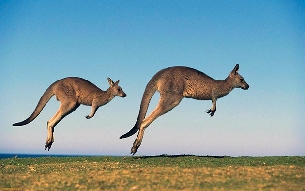

В Австралии много необычных и загадочных животных, и особое место среди них занимают кенгуру, а точнее — семейство кенгуровых, в которое входят крупные и средние кенгуру, валлару и валлаби. Есть еще кенгуровые крысы, мелкие животные похожие на валлаби, но это самостоятельное семейство в подотряде Macropodiformes отряда Двурезцовых сумчатых, к которому относятся кенгуровые. Самые известные особенности кенгуру – это наличие сумки для вынашивания детенышей и характерный способ передвижения, прыжки, позволяющие быстро перемещаться и преодолевать различные препятствия. Кто-то, может быть, вспомнит про тяжелый характер кенгуру, приводящий к стычкам и дракам взрослых самцов. Но на самом деле у этих животных еще много отличий и необычных особенностей. Некоторые их секреты до сих пор являются загадкой для ученых.
